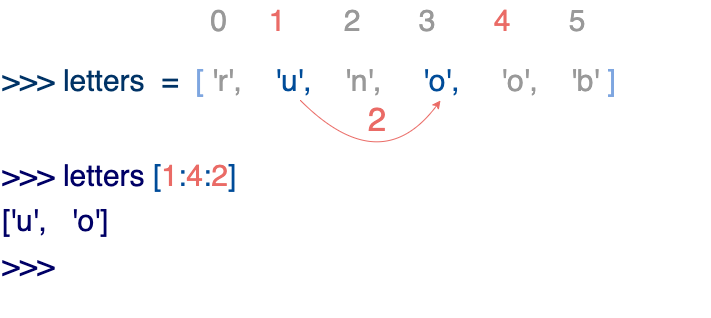

Python3 Basic Data Types
In Python, variables do not need to be declared. Each variable must be assigned a value before it is used, and the variable is created only after it is assigned.
In Python, a variable is just a variable; it has no type. What we call"type"is the type of the object in memory to which the variable refers.
The equal sign=is used to assign values to variables. To the left of the equal sign is the variable name, and to the right is the value stored in the variable. For example:
Example (Python 3.0+)
counter = 100 # integer variable
miles = 1000.0 # floating-point variable
name = "runoob" # string
print(counter)
print(miles)
print(name)
Run example »
Executing the above program will output the following result:
100 1000.0 runoob
Multiple variable assignment
Python allows you to assign values to multiple variables at the same time. For example:
a = b = c = 1
The above example creates an integer object with a value of 1, and all three variables are assigned the same value.
You can also assign different values to multiple variables at the same time. For example:
a, b, c = 1, 2, "runoob"
In the above example, integer objects 1 and 2 are assigned to variables a and b respectively, and the string object "runoob" is assigned to variable c.
You cantype()use the function to view the type of a variable:
Example
x = 10 # integer
y = 3.14 # float
name = "Alice" # string
is_active = True # boolean
# multiple variable assignment
a, b, c = 1, 2, "three"
# check data types
print(type(x)) # <class 'int'>
print(type(y)) # <class 'float'>
print(type(name)) # <class 'str'>
print(type(is_active)) # <class 'bool'>
Standard data types
Python3 has 6 standard data types, as well as the bool Boolean type (bool is a subclass of int, sometimes listed separately):
- Number
- String
- bool (Boolean type)
- List
- Tuple
- Set
- Dictionary
According to whether they are mutable, they can be divided into the following two categories:
- Immutable data (4):Number, String, bool, Tuple
- Mutable data (3):List, Dictionary, Set
In addition, there are some advanced data types, such as the byte array type bytes.
Number
Python3 supportsint, float, bool, complex。
In Python 3, there is only one integer type, int, represented as a long integer; there is no Long as in Python 2.
The built-intype()function can be used to query the type of object to which a variable refers.
>>> a, b, c, d = 20, 5.5, True, 4+3j >>> print(type(a), type(b), type(c), type(d)) <class 'int'> <class 'float'> <class 'bool'> <class 'complex'>
In addition, you can also useisinstance()to determine:
Example
>>> isinstance(a, int)
True
isinstanceandtypeThe difference is:
type()does not consider a subclass to be a parent class type.isinstance()considers a subclass to be a parent class type.
>>> class A: ... pass ... >>> class B(A): ... pass ... >>> isinstance(A(), A) True >>> type(A()) == A True >>> isinstance(B(), A) True >>> type(B()) == A False
Note:In Python3, bool is a subclass of int. True and False can be added to numbers;True==1、False==0it returnsTrue, but you can useisto determine object identity.
>>> issubclass(bool, int) True >>> True == 1 True >>> False == 0 True >>> True + 1 2 >>> False + 1 1 >>> 1 is True <stdin>:1: SyntaxWarning: "is" with 'int' literal. Did you mean "=="? False >>> 0 is False <stdin>:1: SyntaxWarning: "is" with 'int' literal. Did you mean "=="? FalseWhy does SyntaxWarning occur?
Python detects that you are using
isto compare a literal integer (such as 1) with True. This is usually a code error becauseiscompares object identity (whether they are the same object) rather than whether values are equal. Python recommends using==to compare values, unless you really need to check whether it is the same object.In Python 2 there was no Boolean type; it used the number 0 for False and 1 for True.
When you assign a value, a Number object is created:
var1 = 1 var2 = 10
You can use thedelstatement to delete object references:
del var1[, var2[, var3[...., varN]]]
For example:
del var del var_a, var_b
Numeric operations
Example
9
>>> 4.3 - 2 # subtraction
2.3
>>> 3 * 7 # multiplication
21
>>> 2 / 4 # division, results in a float
0.5
>>> 2 // 4 # floor division, results in an integer
0
>>> 17 % 3 # modulo
2
>>> 2 ** 5 # exponentiation
32
Note:
- Python can assign values to multiple variables at the same time, such as
a, b = 1, 2。 - A variable can point to objects of different types through assignment.
- Division of numbers includes two operators:/returns a float,//returns an integer (floor).
- In mixed calculations, Python automatically converts integers to floats.
Numeric type examples
| int | float | complex |
|---|---|---|
| 10 | 0.0 | 3.14j |
| 100 | 15.20 | 45.j |
| -786 | -21.9 | 9.322e-36j |
| 0o17 | 32.3e+18 | .876j |
| -0o112 | -90. | -.6545+0J |
| -0x260 | -32.54e100 | 3e+26J |
| 0x69 | 70.2E-12 | 4.53e-7j |
Note: In Python 3, integer literals do not allow leading zeros (such as
080), octal numbers must use the0oprefix (such as0o17), hexadecimal uses the0xprefix (such as0x69), binary uses the0bprefix.
Python also supports complex numbers. A complex number consists of a real part and an imaginary part, and can be expressed witha + bjorcomplex(a, b). The real partaand the imaginary partbare both of float type.
String
Strings in Python are enclosed in single quotes'or double quotes", and backslashes are used\to escape special characters.
The syntax for string slicing is as follows:
variable[start index:end index]
Index values start at 0, and -1 is the position from the end.

The plus sign+is the string concatenation operator, and the asterisk*indicates repeating the current string, and the number combined with it is the number of repetitions. An example is as follows:
Example
my_str = 'Runoob' # define a string variable (avoid using str as a variable name, as it will shadow the built-in type)
print(my_str) # print the entire string: Runoob
print(my_str[0:-1]) # print from index 0 to the second-to-last character (excluding the last): Runoo
print(my_str[0]) # print the first character: R
print(my_str[2:5]) # print characters at indices 2, 3, 4 (excluding index 5): noo
print(my_str[2:]) # print from index 2 to the end: noob
print(my_str * 2) # repeat twice: RunoobRunoob
print(my_str + "TEST") # string concatenation: RunoobTEST
Executing the above program will output the following result:
Runoob Runoo R noo noob RunoobRunoob RunoobTEST
Python uses backslashes\to escape special characters. If you don't want the backslash to escape, you can add anrin front of the string, indicating a raw string:
Example
Ru
oob
>>> print(r'Ru\noob')
Ru\noob
In addition, the backslash (\) can serve as a line continuation character, indicating that the next line is a continuation of the previous line. You can also use"""..."""or'''...'''to span multiple lines.
Note that Python has no separate character type; a character is a string of length 1.
Example
>>> print(word[0], word[5])
P n
>>> print(word[-1], word[-6])
n P
Unlike C strings, Python strings cannot be changed. Assigning a value to an index position, such asword[0] = 'm'will cause an error.
Note:
- Backslashes can be used for escaping; use
rA prefix can prevent backslashes from being escaped (raw strings). - Strings can use the
+operator to concatenate, and the*operator to repeat. - Strings in Python have two indexing methods: starting from 0 from left to right, and starting from -1 from right to left.
- Strings in Python cannot be changed; strings are an immutable type.
bool (Boolean type)
The boolean type is True or False. In Python, True and False are both keywords representing boolean values.
The boolean type can be used to control program flow, such as determining whether a condition holds, or executing a piece of code when a condition is met.
Characteristics of the boolean type:
- The boolean type has only two values: True and False.
- bool is a subclass of int, so boolean values can be used as integers, where True is equivalent to 1 and False is equivalent to 0.
- The boolean type can be compared with other data types, such as numbers and strings. During comparison, Python treats True as 1 and False as 0.
- The boolean type can be used with logical operators, including
and、orandnot, to combine multiple boolean expressions. - The boolean type can also be converted to other data types, such as integers, floats, and strings. When converted, True becomes 1 and False becomes 0.
- You can use the
bool()function to convert values of other types to boolean. The following values, when converted to boolean, areFalse：None、False, zero (0、0.0、0j), empty sequences (such as''、()、[]) and empty mappings (such as{}). All other values, when converted to boolean, areTrue。
Example
a = True
b = False
print(type(a)) # <class 'bool'>
print(type(b)) # <class 'bool'>
# Integer representation of boolean type
print(int(True)) # 1
print(int(False)) # 0
# Use the bool() function for conversion
print(bool(0)) # False
print(bool(42)) # True
print(bool('')) # False
print(bool('Python')) # True
print(bool([])) # False
print(bool([1, 2, 3])) # True
# Boolean logic operations
print(True and False) # False
print(True or False) # True
print(not True) # False
# Boolean comparison operations
print(5 > 3) # True
print(2 == 2) # True
print(7 < 4) # False
# Boolean values in control flow
if True:
print("This will always print")
if not False:
print("This will also always print")
x = 10
if x:
print(x is a non-zero value, which is True in a boolean context)
Note:In Python, all non-zero numbers and non-empty strings, lists, tuples, and other data types are considered True; only0, empty strings, empty lists, and empty tuplesetc. are considered False. Therefore, when performing boolean type conversion, you need to pay attention to the truthiness of the data type.
List
List is the most frequently used data type in Python.
Lists can implement most collection data structures. The types of elements in a list can be different; it supports numbers, strings, and can even contain lists (i.e., nested lists).
Lists are written in square brackets[]between them, with elements separated by commas.
Like strings, lists can also be indexed and sliced. After a list is sliced, it returns a new list containing the desired elements.
The syntax for list slicing is as follows:
variable[start index:end index]
Index values take0as the starting value,-1as the starting position from the end.

The plus sign+is the list concatenation operator; the asterisk*is the repetition operation. Example:
Example
my_list = ['abcd', 786, 2.23, 'runoob', 70.2] # Avoid using list as a variable name; it will shadow the built-in type
tinylist = [123, 'runoob']
print(my_list) # Print the entire list: ['abcd', 786, 2.23, 'runoob', 70.2]
print(my_list[0]) # Print the first element (index 0): abcd
print(my_list[1:3]) # Print elements at indices 1 and 2 (excluding index 3): [786, 2.23]
print(my_list[2:]) # Print all elements from index 2 to the end: [2.23, 'runoob', 70.2]
print(tinylist * 2) # Print tinylist twice: [123, 'runoob', 123, 'runoob']
print(my_list + tinylist) # Concatenate two lists
The output of the above example is:
['abcd', 786, 2.23, 'runoob', 70.2] abcd [786, 2.23] [2.23, 'runoob', 70.2] [123, 'runoob', 123, 'runoob'] ['abcd', 786, 2.23, 'runoob', 70.2, 123, 'runoob']
Unlike Python strings, the elements in a list can be changed:
Example
>>> a[0] = 9
>>> a[2:5] = [13, 14, 15]
>>> a
[9, 2, 13, 14, 15, 6]
>>> a[2:5] = [] # Set the corresponding element values to an empty list, i.e., delete these elements
>>> a
[9, 2, 6]
List has many built-in methods, such asappend()、pop()etc., which will be covered later.
Note:
- Lists are written between square brackets, with elements separated by commas.
- Like strings, lists can be indexed and sliced.
- Lists can use the+operator for concatenation.
- The elements in a list can be changed (mutable type).
Python list slicing can accept a third parameter, which acts as the step size of the slice. The following example sets the step size to 2 (taking every other element) from index 1 to index 4 to slice the list:

If the third parameter is negative, it indicates reverse reading. The following example is used to reverse the order of words in a string:
Example
# Split the string by spaces to separate the words into a list
inputWords = input.split(" ")
# Explanation of the three parameters of inputWords[-1::-1]:
# The first parameter -1 means starting from the last element
# The second parameter is empty, meaning move to the beginning of the list
# The third parameter -1 means stepping in reverse (moving one position to the left each time)
inputWords = inputWords[-1::-1]
# Rejoin the words with spaces
output = ' '.join(inputWords)
return output
if __name__ == "__main__":
input = 'I like runoob'
rw = reverseWords(input)
print(rw)
The output result is:
runoob like I
Tuple
A tuple is similar to a list, except that tuple elements cannot be modified. Tuples are written in parentheses()with elements separated by commas.
The element types in a tuple can also be different:
Example
my_tuple = ('abcd', 786, 2.23, 'runoob', 70.2) # Avoid using tuple as a variable name
tinytuple = (123, 'runoob')
print(my_tuple) # Print the complete tuple
print(my_tuple[0]) # Print the first element: abcd
print(my_tuple[1:3]) # Print elements at indices 1 and 2: (786, 2.23)
print(my_tuple[2:]) # Print all elements starting from index 2
print(tinytuple * 2) # Print tinytuple twice
print(my_tuple + tinytuple) # Concatenate two tuples
The output of the above example is:
('abcd', 786, 2.23, 'runoob', 70.2)
abcd
(786, 2.23)
(2.23, 'runoob', 70.2)
(123, 'runoob', 123, 'runoob')
('abcd', 786, 2.23, 'runoob', 70.2, 123, 'runoob')
Tuples are similar to strings; they can be indexed with indices starting from 0, -1 being the position from the end, and they can also be sliced.
In fact, a string can be viewed as a special kind of tuple.
Example
>>> print(tup[0])
1
>>> print(tup[1:5])
(2, 3, 4, 5)
>>> tup[0] = 11 # Modifying tuple elements is illegal
Traceback (most recent call last):
File "<stdin>", line 1, in <module>
TypeError: 'tuple' object does not support item assignment
Although tuple elements cannot be changed, a tuple can contain mutable objects, such as a list.
Constructing a tuple with 0 or 1 elements is special and has some extra syntax rules:
tup1 = () # 空元组 tup2 = (20,) # 一个元素，需要在元素后添加逗号
If you want to create a tuple with only one element, you need to add a comma after the element to distinguish it from a plain value. Without the comma, Python interprets the parentheses as parentheses in a mathematical expression:
not_a_tuple = (42) # 这是整数 42，不是元组
string、listandtupleall belong to the sequence type.
Note:
- Like strings, the elements of a tuple cannot be modified (immutable type).
- Tuples can also be indexed and sliced in the same way as lists.
- Note the special syntax rules for constructing tuples with 0 or 1 elements.
- Tuples can also use the+operator for concatenation.
Set
A Set in Python is an unordered, mutable data type used to store unique elements. Elements in a set do not repeat, and common set operations such as intersection, union, and difference can be performed.
In Python, sets are represented by curly braces{}with elements separated by commas,separated. You can also useset()function to create a set.
Note:To create an empty set, you must useset()instead of{}, because{}creates an empty dictionary.
Creation format:
parame = {value01, value02, ...}
或者
set(value)
Example
sites = {'Google', 'Taobao', 'Runoob', 'Facebook', 'Zhihu', 'Baidu'}
print(sites) # Output the set (unordered, duplicate elements are automatically removed)
# Membership test
if 'Runoob' in sites:
print('Runoob is in the set')
else:
print('Runoob is not in the set')
# Sets support set operations
a = set('abracadabra')
b = set('alacazam')
print(a) # Unique characters in a
print(a - b) # Difference between a and b (in a but not in b)
print(a | b) # Union of a and b (in a or b)
print(a & b) # Intersection of a and b (in both a and b)
print(a ^ b) # Symmetric difference of a and b (in a or b, but not both)
The output of the above example is:
{'Zhihu', 'Baidu', 'Taobao', 'Runoob', 'Google', 'Facebook'}
Runoob 在集合中
{'b', 'c', 'a', 'r', 'd'}
{'r', 'b', 'd'}
{'b', 'c', 'a', 'z', 'm', 'r', 'l', 'd'}
{'c', 'a'}
{'z', 'b', 'm', 'r', 'l', 'd'}
Dictionary
A dictionary is another very useful built-in data type in Python.
A dictionary is a mapping type, using{}as its identifier; it is akey: valueA collection of. Keys must use immutable types, and keys must be unique within the same dictionary.
Note:Since Python 3.7, dictionaries maintain theinsertion order, and are no longer unordered. If you need ordered dictionary features, just use a regular
dictdict.
Example
my_dict = {}
my_dict['one'] = "1 - Rookie Tutorial"
my_dict[2] = "2 - Rookie Tools"
tinydict = {'name': 'runoob', 'code': 1, 'site': 'www.runoob.com'}
print(my_dict['one']) # Output the value with key 'one'
print(my_dict[2]) # Output the value with key 2
print(tinydict) # Output the complete dictionary
print(tinydict.keys()) # Output all keys
print(tinydict.values()) # Output all values
The output of the above example is:
1 - 菜鸟教程
2 - 菜鸟工具
{'name': 'runoob', 'code': 1, 'site': 'www.runoob.com'}
dict_keys(['name', 'code', 'site'])
dict_values(['runoob', 1, 'www.runoob.com'])
Constructordict()You can directly construct a dictionary from a sequence of key-value pairs:
Example
{'Runoob': 1, 'Google': 2, 'Taobao': 3}
>>> {x: x**2 for x in (2, 4, 6)}
{2: 4, 4: 16, 6: 36}
>>> dict(Runoob=1, Google=2, Taobao=3)
{'Runoob': 1, 'Google': 2, 'Taobao': 3}
{x: x**2 for x in (2, 4, 6)}This uses a dictionary comprehension. For more on comprehensions, refer to:Python Comprehensions。
In addition, dictionary types also have some built-in functions, such asclear()、keys()、values()etc.
Note:
- A dictionary is a mapping type, and its elements are key-value pairs.
- Dictionary keys must be of immutable type and cannot be duplicated.
- To create an empty dictionary, use{}。
- Since Python 3.7, dictionaries maintain insertion order.
bytes type
In Python 3, the `bytes` type represents an immutable binary sequence. Unlike the string type, the elements in a `bytes` object are integer values (integers between 0 and 255), not Unicode characters.
The `bytes` type is usually used to handle binary data, such as image files, audio files, video files, etc. In network programming, the `bytes` type is also often used to transmit binary data.
The most common way to create a `bytes` object is to use abprefix:
Example
print(x) # b'hello'
print(type(x)) # <class 'bytes'>
print(x[0]) # 104 (ASCII value of 'h', bytes elements are integers)
You can also use thebytes()function to convert objects of other types to the `bytes` type; the second parameter specifies the encoding:
x = bytes("hello", encoding="utf-8")
Similar to the string type, the `bytes` type also supports slicing, concatenation, searching, replacing, etc. Since the `bytes` type is immutable, modification operations require creating a new `bytes` object:
Example
y = x[1:3] # Slicing operation, gets b'el'
z = x + b"world" # Concatenation operation, gets b'helloworld'
print(y) # b'el'
print(z) # b'helloworld'
Note that the elements in the `bytes` type are integer values, so when performing comparison operations you need to use the corresponding integer value. You can use theord()function to convert a character to its corresponding integer value:
Example
if x[0] == ord("h"): # ord("h") returns 104
print("The first element is 'h'")
Python Data Type Conversion
Sometimes we need to convert built-in data types; simply use the data type as a function name. In the next chapterPython3 Data Type Conversionwill be introduced in detail.
The following built-in functions can perform conversions between data types. These functions return a new object representing the converted value:
| Function | Description |
|---|---|
Convert x to an integer |
|
Convert x to a floating-point number |
|
Create a complex number |
|
Convert object x to a string |
|
Convert object x to an expression string |
|
Evaluate a valid Python expression in a string and return an object |
|
Convert sequence s to a tuple |
|
Convert sequence s to a list |
|
Convert to a mutable set |
|
Create a dictionary. d must be a sequence of (key, value) tuples. |
|
Convert to an immutable set |
|
Convert an integer to the corresponding character |
|
Convert a character to its integer value (Unicode code point) |
|
Convert an integer to a hexadecimal string |
|
Convert an integer to an octal string |